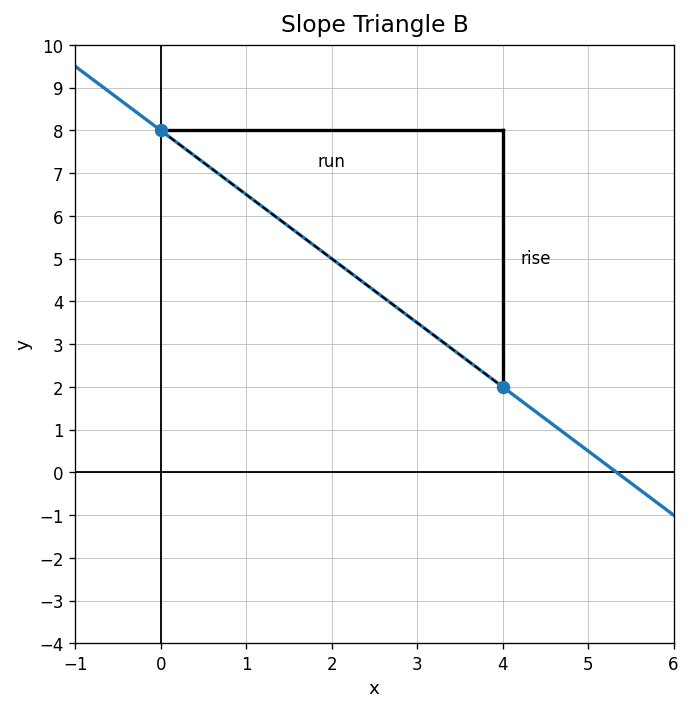
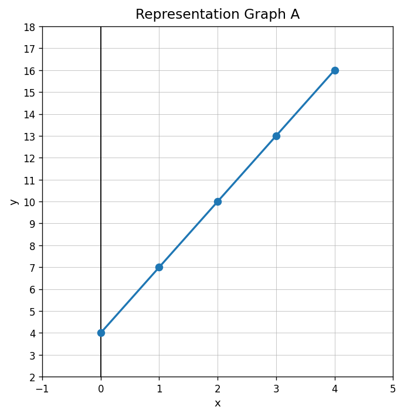

Use the graph. What are the rise and run shown by the slope triangle?

Complete the sentence: Slope compares the vertical change, or __________, to the horizontal change, or __________.
Find the slope of the line through $(2,5)$ and $(6,17)$.
A student finds the slope between $(1,8)$ and $(5,2)$ and writes $\frac{4}{-6}$. Explain what was reversed and find the correct slope.
Use the graph. What is the value of $y$ when $x=2$?

In the ordered pair $(7,19)$, identify the input and the output.
Which phrase best matches $y=5x$?
A parking garage charges 3 dollars per hour plus a 5 dollar entry fee. Which number is the starting value?
Complete the table for $y=4x+1$.
| $x$ | 0 | 1 | 2 | 3 |
|---|---|---|---|---|
| $y$ |
Does the story “Start with 10 dollars and save 8 dollars each week” match the table? Explain.
| weeks | 0 | 1 | 2 | 3 |
|---|---|---|---|---|
| dollars | 10 | 18 | 26 | 34 |
A student says, “If two representations both have the number 4 in them, they must match.” Critique the statement using an example.
The equation $y=2x+5$ is supposed to match the table, but one output is wrong. Find and revise the incorrect value, then explain your evidence.
| $x$ | 0 | 1 | 2 | 3 |
|---|---|---|---|---|
| $y$ | 5 | 7 | 10 | 11 |
State whether $(0,-6)$ lies on the $x$-axis, the $y$-axis, or neither.
To plot $(-3,4)$, describe the horizontal move and vertical move from the origin.
A graph includes the points $(1,6)$ and $(4,15)$. How much does $y$ change when $x$ increases by 3?
A point $(5,0)$ appears on a graph showing water left in a tank over time. Explain what the point might mean.